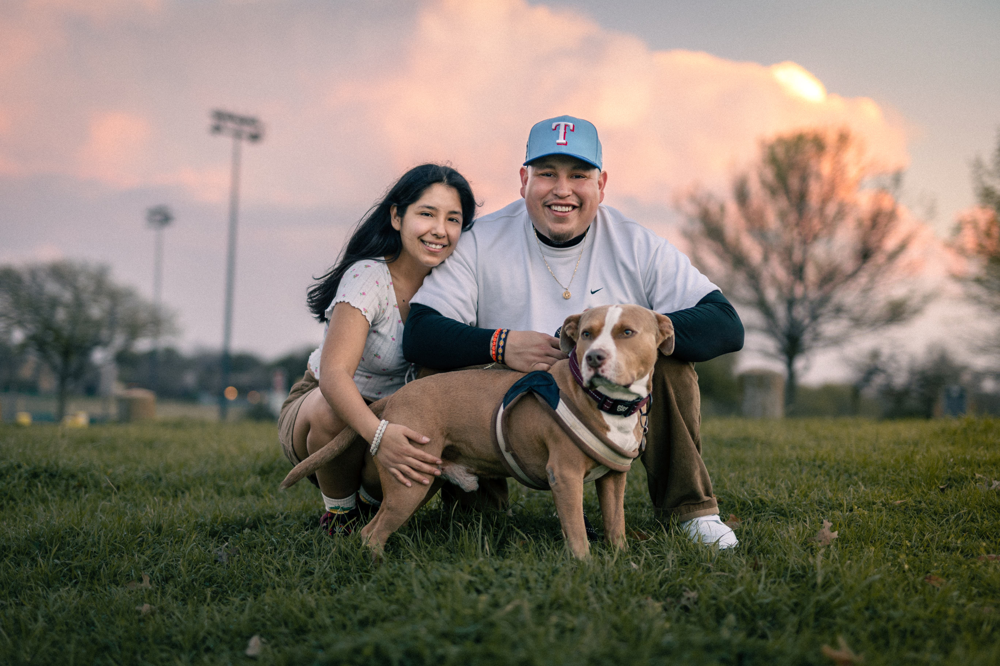
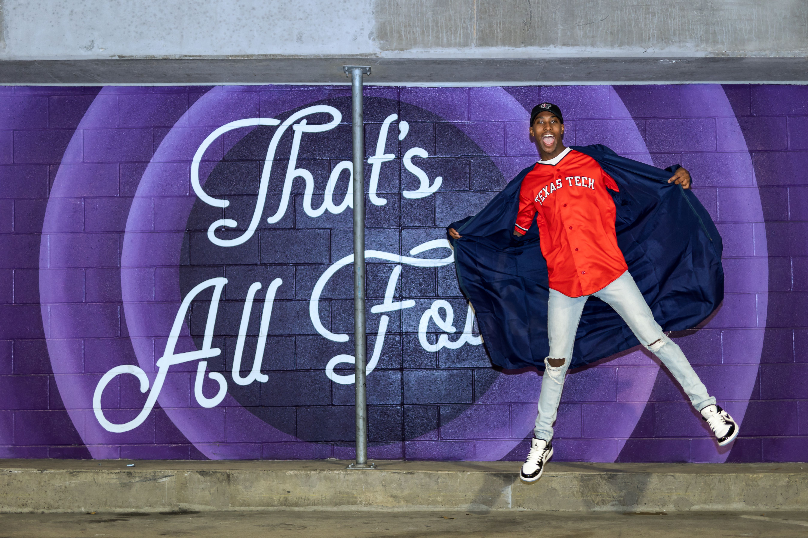
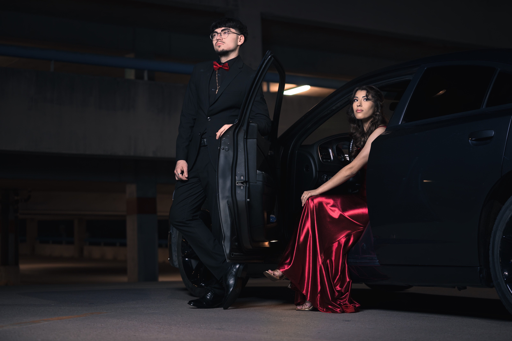
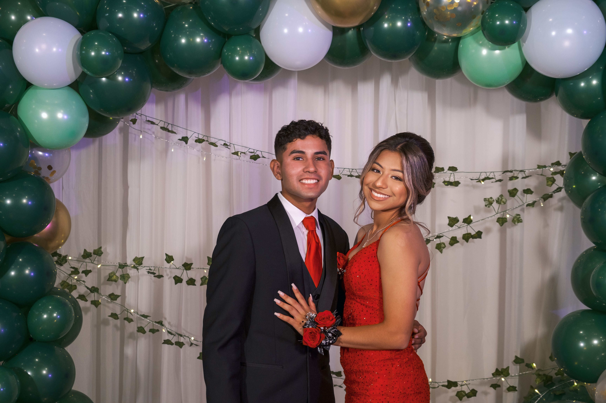
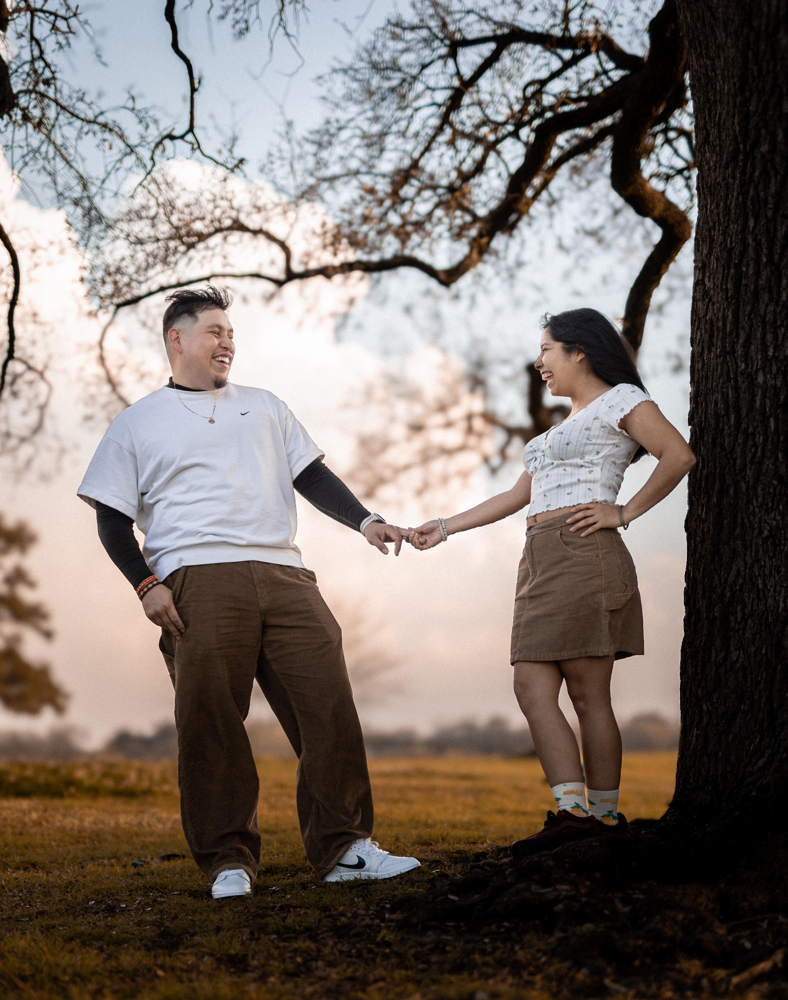
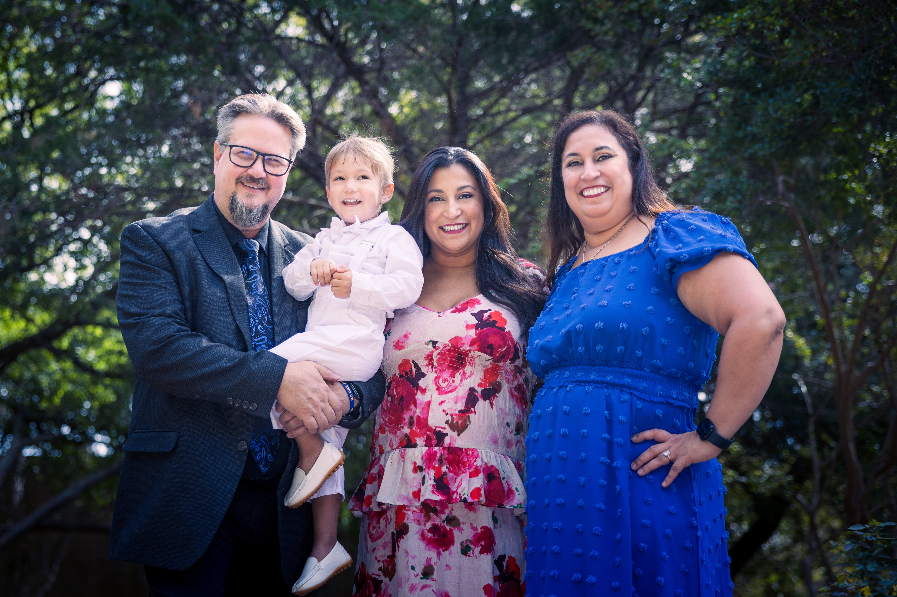
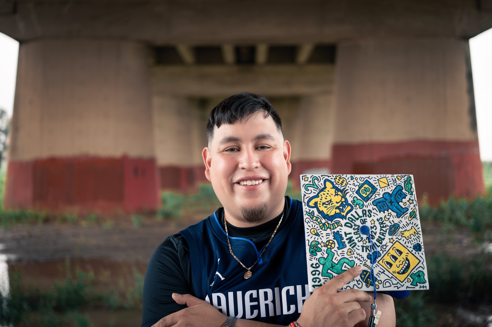

Welcome
Your Story Through My Lens
Specializing in capturing authentic moments with an artistic touch.
Every photograph is more than just an image – it's a treasured memory, a fleeting moment frozen in time, a story waiting to be retold. As your photographer, I'm not just behind the lens; I'm there to understand your journey, celebrate your milestones, and preserve those precious moments that make life extraordinary.
Whether it's the genuine laughter during family portraits, the tender moments between couples, or the confident smile of a graduating senior, my passion lies in creating images that reflect the real you. These aren't just photos – they're tomorrow's cherished memories, captured today with creativity, care, and attention to detail.
Portfolio
Featured Work









Services
What I Offer